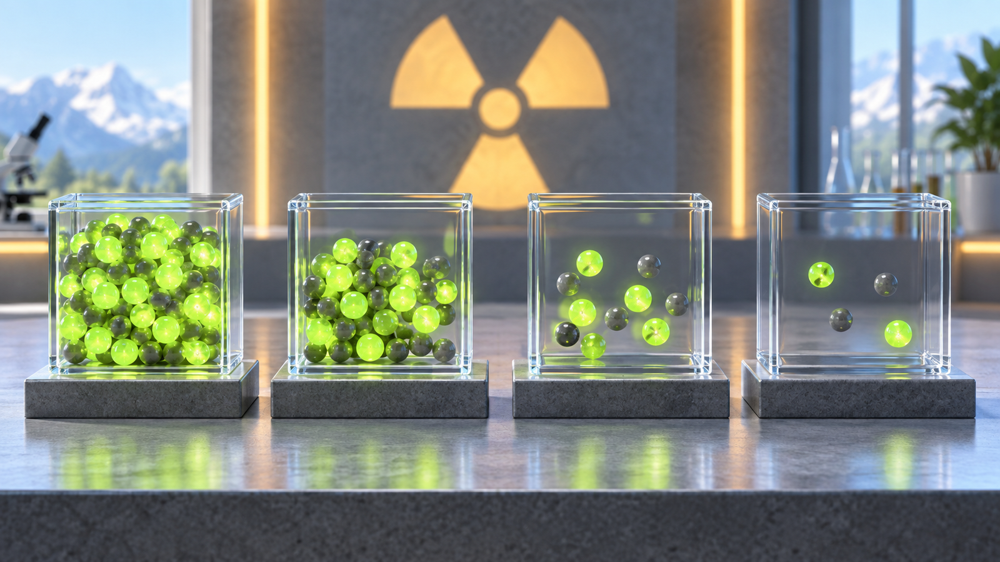
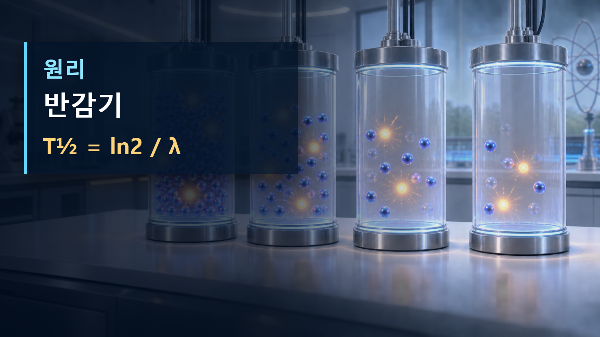

방사성붕괴와 시간 · 050
반감기
방사성 핵종의 절반이 남는 고유 시간

반감기는 초기 핵 수와 무관하게 같은 핵종의 재고가 절반으로 줄어드는 시간입니다. 붕괴가 완전히 끝나는 시간은 아닙니다.
개념의 정의
반감기는 초기 핵 수와 무관하게 같은 핵종의 재고가 절반으로 줄어드는 시간입니다. 붕괴가 완전히 끝나는 시간은 아닙니다. 반감기의 개념의 정의에서는 여기서 구분해야 할 것은 눈에 보이는 현상과 원자핵 수준의 원인입니다. 반감기의 개념의 정의에서는 같은 용어라도 핵종, 입사에너지, 관측시간에 따라 결과가 달라질 수 있으므로 먼저 계의 경계와 보존되는 양을 정해야 합니다. 반감기 T½는 많은 동일 핵종 가운데 절반이 평균적으로 남는 데 걸리는 시간이며 T½=ln2/λ입니다.
작동 원리와 보존관계
이 현상을 가장 간단히 나타내는 관계는 T½ = ln2 / λ 입니다. 반감기의 작동 원리와 보존관계에서는 이 식이나 관계는 반응 전후의 질량·전하·에너지·운동량 가운데 무엇이 유지되고 무엇이 다른 형태로 옮겨 가는지 보여 줍니다. 반감기의 작동 원리와 보존관계에서는 실제 핵은 여러 에너지준위와 반응경로를 가지므로 식은 출발점이며, 핵종별 평가자료를 함께 사용해야 합니다.

단계별 예시 1
반감기의 단계별 예시 1에서는 첫 단계에서는 초기 핵종과 입사입자 또는 초기 재고를 정합니다. 둘째 단계에서는 T½ = ln2 / λ에 맞추어 변한 양을 추적합니다. 반감기의 단계별 예시 1에서는 셋째 단계에서는 방출입자와 딸핵 또는 남은 재고가 검출기와 물질에서 만드는 효과를 해석합니다. I-131의 반감기는 약 8일이므로 24일 뒤에는 처음의 약 1/8이 남습니다. 반감기의 단계별 예시 1에서는 이 예시는 미시적인 한 사건을 거시적인 열·계수율·영상 신호로 연결하는 방법을 보여 줍니다.
단계별 예시 2
반감기의 단계별 예시 2에서는 조건이 달라지는 두 번째 예시에서는 시간척도와 측정경계를 함께 봅니다. I-131의 반감기를 약 8일로 보면 24일은 세 반감기이므로 초기의 (1/2)³=1/8, 즉 12.5%가 남습니다. 반감기의 단계별 예시 2에서는 숫자를 대입하는 것만으로 끝내지 않고 결과가 사건당 값인지, 초당 값인지, 시료 전체의 평균인지 확인해야 합니다. 반감기의 단계별 예시 2에서는 이 구분이 없으면 같은 수치도 실제보다 크게 또는 작게 해석될 수 있습니다.
| 구분 | 핵심 값·변화 | 해석 의미 |
|---|---|---|
| 1 반감기 | 50% 잔존 | 1/2 |
| 2 반감기 | 25% 잔존 | 1/4 |
| 3 반감기 | 12.5% 잔존 | 1/8 |
원자력공학의 실제 적용
핵의학 투여계획, 저장·운반·해체 시점과 냉각기간을 정하는 척도입니다. 반감기의 원자력공학의 실제 적용에서는 설계자는 발생원, 이동경로, 에너지 침적, 검출 또는 열제거의 순서로 문제를 나눕니다. 반감기의 원자력공학의 실제 적용에서는 운전자료와 계산값이 다를 때에는 핵자료의 불확실성, 기하형상, 물질조성, 검출효율과 시간응답을 차례로 확인합니다. 반감기의 원자력공학의 실제 적용에서는 이 과정은 원자로물리뿐 아니라 방사선방호, 핵의학, 연료관리와 계측에서도 같은 논리로 적용됩니다.
오해와 적용 한계
반감기가 지나면 모든 원자가 절반의 상태가 되는 것은 아닙니다. 개별 핵은 온전히 남거나 붕괴하며, 절반은 매우 큰 집단에 대한 통계적 기대값입니다. 반감기의 오해와 적용 한계에서는 또한 그림 속 입자 크기와 거리는 실제 비율이 아니며, 한 장면은 가능한 여러 경로 가운데 핵심만 나타냅니다. 반감기의 오해와 적용 한계에서는 정밀 판단에는 최신 핵자료와 실험조건을 사용해야 합니다.
핵심 정리
반감기의 핵심은 방사성 핵종의 절반이 남는 고유 시간을 조건·시간척도·관측량과 함께 읽는 데 있습니다. 먼저 반감기는 초기 핵 수와 무관하게 같은 핵종의 재고가 절반으로 줄어드는 시간입니다. 붕괴가 완전히 끝나는 시간은 아닙니다. 다음으로 T½ = ln2 / λ이 무엇을 연결하는지 확인하고, 계산 결과가 사건 하나의 값인지 시료 전체의 평균인지 구분합니다. 마지막으로 핵의학 투여계획, 저장·운반·해체 시점과 냉각기간을 정하는 척도입니다. 반감기의 핵심 정리에서는 이 세 단계를 지키면 비유에 머물지 않고 실제 원자력공학 문제로 개념을 확장할 수 있습니다. 반감기의 핵심 정리에서는 반대로 핵종과 에너지범위, 측정조건을 생략하면 같은 공식도 잘못 적용될 수 있으므로 출처의 적용범위를 함께 확인해야 합니다. 반감기의 핵심 정리에서는 계산값을 전달할 때에는 사용한 핵종, 초기조건, 단위와 근사 가정을 함께 기록해야 다른 사람이 같은 결과를 재현하고 판단의 한계를 확인할 수 있습니다.